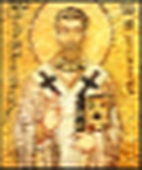
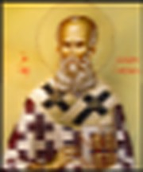
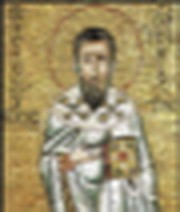
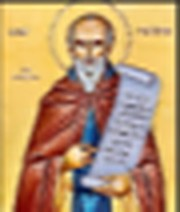

St Gregorius dari Nazianzus menjelaskan bahwa kebaikan dan terang Allah begitu melimpah sehingga "meluap" (overflow) ke dalam tindakan penciptaan

Menyalakan cahaya…
Allah adalah Kasih (1 Yohanes 4:8): Karena Allah adalah Kasih di dalam hakikat-Nya, kasih tersebut bersifat relasional. Bapa adalah Sang Pengasih, Anak adalah Yang Dikasihi, dan Roh Kudus adalah Wujud Aliran Kasih itu sendiri. Kasih Allah sudah sempurna dari kekekalan tanpa membutuhkan ciptaan. Lalu kenapa Allah Mencipta?
St Gregorius dari Nazianzus menjelaskan bahwa kebaikan dan terang Allah begitu melimpah sehingga "meluap" (overflow) ke dalam tindakan penciptaan


Santo Gregorius dari Nyssa menegaskan bahwa Allah membentuk ciptaan bukan karena kebutuhan, melainkan memola lahirnya kehidupan dari kelimpahan kasih (excess of love), agar kebaikan, terang, dan kemuliaan-Nya dapat dinikmati oleh makhluk ciptaan.


gerakan ini sebagai Ecstasis Ilahi—di mana Allah, karena kelimpahan kasih-Nya yang membara (erotikēs agathotētos), "keluar" untuk memelihara dan membawa ciptaan menuju persatuan dengan-Nya (Theosis)
Satu Hakikat (Ousia), Tiga Pribadi (Hypostasis)
Allah adalah Esa dalam Hakikat/Esensi (Ousia), yaitu memiliki satu kodrat keilahian, satu kuasa, satu kehendak, dan satu kemuliaan yang tak terbagi. Tidak seorang pun manusia pernah Melihat ALLAH.
Arahkan kursor ke partikel cahayauntuk melihat ayat
“Saling memberi ruang”, “Saling melingkupi”, atau “Saling bergerak masuk dan menempati ruang satu sama lain”
Arahkan kursor ke partikel cahayauntuk melihat ayat
Karena Allah adalah Kasih yang sempurna, kasih di dalam Perichoresis tersebut meluap secara sukarela melintasi batas keilahian-Nya untuk memanggil ciptaan dari ketiadaan (creatio ex nihilo)
Malaikat/Dunia Spiritual
Kosmos/Alam Semesta
προγινώσκω
Kemahatahuan Allah
וַיֹּאמֶר אֱלֹהִיםWayyōmer Elohim
Di Taman Eden itu Sang Firman berkata
“Maka Allah menciptakan manusia itu menurut gambar-Nya, menurut gambar Allah diciptakan-Nya dia; laki-laki dan perempuan diciptakan-Nya mereka.”
Kejadian 1:27 (TB)
Kelompok kitab
Kristofani & Inkarnasi Sang Firman · arahkan kursor ke ayat untuk menyorot busurnya